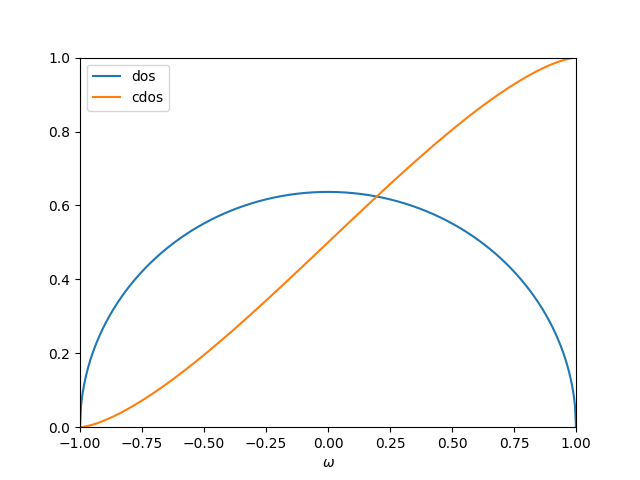
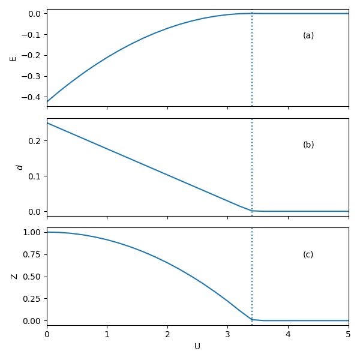
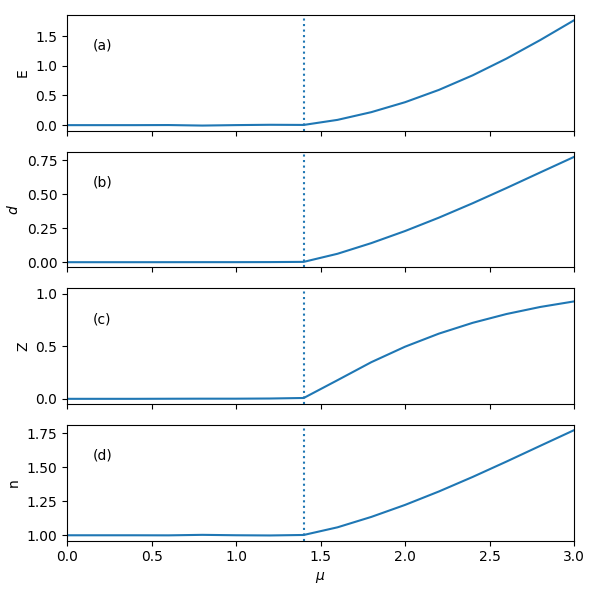

Single-band Bethe lattice¶
In this example, we study a special one-band Hubbard model, which has semi-circular noninteracting density of states (DOS), It corresponds to Bethe lattice with infinite coordination number. You will learn:
How to set up a simple model calculation
How the correlation strength induces metal-insulator transition in the Gutzwiller-slave-boson theory
How to determine the energy gap for the Mott-insulating phase
There is predefined class, which helps generating the energy mesh with uniform weight.
In the model, we use half-band width as the energy unit. The noninteracting DOS and cumulative dos is shown as below:
{kind=link}
A function to setup the model for CyGutz calculation has been defined,
- pygrisb.model.semicir.gutz_model_setup(u=0.0, nmesh=5000, mu=0, iembeddiag=- 2, num_e=0.0, ensemble=1)[source]¶
Set up Gutzwiller calculations for 1-band model with semi-circular DOS.
Parameters:
u: real number Hubbard U.
nmesh: interger number number of energy mesh
mu: real number chemical potential
Result:
Create all the necessary input file of
GParam.h5,GBareH.h5for CyGutz calculation.
For convenience, we have also predefined a function to run CyGutz for a list of Hubbard \(U\) or chemical potential \(\mu\),
- pygrisb.model.test.scan_semicirc.generate_data(u_list, mu_list)[source]¶
run CyGutz calculations for a list of U and mu. save the results in results.
Parameters:
u_list: real array list of Hubbard U parameters.
mu_list: real array list of chemical potential
Result:
save the list of energies (e_list), double occupancy (d_list), quasi-particle weight (z_list) and occupation (n_list) to
result.dattext file as well as theresult.h5hdf5 file.
Let us first look at the case of \(\mu=0\), i.e., in the particle-hole symmetric case. Let us perform a series of CyGutz calculations with increasing \(U\), and check the behavior of the total energy, double occupancy, and quasi-particle weight (Z=:math:R^dagger R). Recall that in Gutzwiller-slave boson theory, Z=0 implies the system is in the Mott insulating phase, where all the spectral weight becomes non-coherent.
A script for a job of scanning \(U\) is defined as
- pygrisb.model.test.scan_semicirc.scan_u(mu=0.0)[source]¶
run CyGutz calculations for a list of U for a given mu.
Parameters:
mu: real number the fixed chemical potential.
Result:
it will generate results for a u_list of np.arange(0.0, 5.1, 0.2) at fixed mu.
For a hands-on practice, assuminig your current directory is comrisb_tutorial/tutorials/Bethe_Latt/, type the following command to run the job:
$ mkdir -p work && cd work
$ python ../scan_semicirc.py
It will automatically generate the following results:
{kind=link}
One can see that the \(U_{c}\) ~ 3.4 for the metal-insulator transition.
Although the theory gives a very simplified picture of the Mott insulator, i.e., double occupancy or quasi-particle weight is 0, it is possible to get the band gap size by varying the chemical potential.
A script for a job of scanning \(\mu\) at \(U=5\) is defined as
- pygrisb.model.test.scan_semicirc.scan_mu(u=5.0)[source]¶
run CyGutz calculations for a list of mu for a given u.
Parameters:
u: real number the fixed Hubbard U
Result:
it will generate results for a mu_list = np.arange(0.0, 3.1, 0.1) at fixed u.
Stay in the same work directory and type the following command for calculations to get the band gap:
$ python ../scan_semicirc.py -mu
It will automatically generate the following results:
{kind=link}
One can see that the physical quantities of interest stay constant in the gap region. When \(\mu\) increases over ~ 1.4, the orbital occupation \(n\) starts to decrease, indicating the gap size ~ 1.4*2 = 2.8. The factor of 2 comes from particle-hole symmetry.